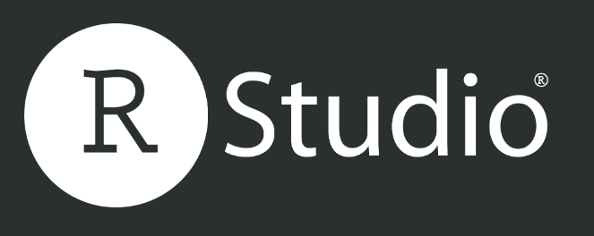

Before After Image slider
July 2022 was for me the month of before after image slider.
I saw a lot of examples
of it on twitter using jupyter, streamlit, and finally quarto yesterday.
I think it is finally time to have a short example on how to add a before after image slider
in nimib using juxtapose:
template useJuxtapose(doc: var NbDoc) =
doc.partials["head"] &= """
<link rel="stylesheet" href="https://cdn.knightlab.com/libs/juxtapose/latest/css/juxtapose.css">
"""
doc.partials["main"] &= """
<script src="https://cdn.knightlab.com/libs/juxtapose/latest/js/juxtapose.min.js"></script>
"""
doc.partials["nbJuxtapose"] = """
<div class="juxtapose">
<img src="{{img1Src}}">
<img src="{{img2Src}}">
</div>
"""
template nbJuxtapose(img1Src, img2Src: string) =
newNbSlimBlock("nbJuxtapose"):
nb.blk.context["img1Src"] = img1Src
nb.blk.context["img2Src"] = img2Src


You might have heard indeed that RStudio is becoming Posit.
I have been following RStudio for a while and I think it is really a great company. They recently (2020)
incorporated as a Public Benefit Corporation and
Our charter defines our mission as the creation of free and open source software for data science, scientific research, and technical communication.
From the same blog post:
You can expect to see more multilanguage experiments in the future.
Maybe in the future also Nim might find a home in Posit, who knows!
import nimib
nbInit
nbText: """
# Before After Image slider
July 2022 was for me the month of _before after image slider_.
I saw [a lot of examples](https://github.com/pietroppeter/nblog/issues/9)
of it on twitter using jupyter, streamlit, and finally quarto yesterday.
I think it is finally time to have a short example on how to add a before after image slider
in nimib using [juxtapose](https://github.com/NUKnightLab/juxtapose):
"""
nbCode:
template useJuxtapose(doc: var NbDoc) =
doc.partials["head"] &= """
<link rel="stylesheet" href="https://cdn.knightlab.com/libs/juxtapose/latest/css/juxtapose.css">
"""
doc.partials["main"] &= """
<script src="https://cdn.knightlab.com/libs/juxtapose/latest/js/juxtapose.min.js"></script>
"""
doc.partials["nbJuxtapose"] = """
<div class="juxtapose">
<img src="{{img1Src}}">
<img src="{{img2Src}}">
</div>
"""
template nbJuxtapose(img1Src, img2Src: string) =
newNbSlimBlock("nbJuxtapose"):
nb.blk.context["img1Src"] = img1Src
nb.blk.context["img2Src"] = img2Src
nb.useJuxtapose
nbJuxtapose("rstudio.png", "posit.png")
nbText: """You might have heard indeed that [RStudio is becoming Posit](https://www.rstudio.com/blog/rstudio-is-becoming-posit/).
I have been following RStudio for a while and I think it is really a great company. They recently (2020)
incorporated as a Public Benefit Corporation and
> Our charter defines our mission as the creation of free and open source software for data science, scientific research, and technical communication.
From the same blog post:
> You can expect to see more multilanguage experiments in the future.
Maybe in the future also Nim might find a home in Posit, who knows!
"""
nbSave